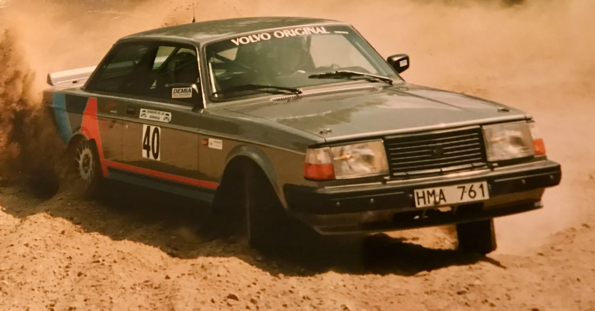
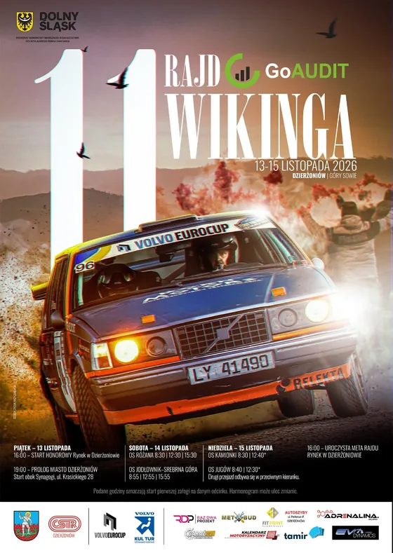
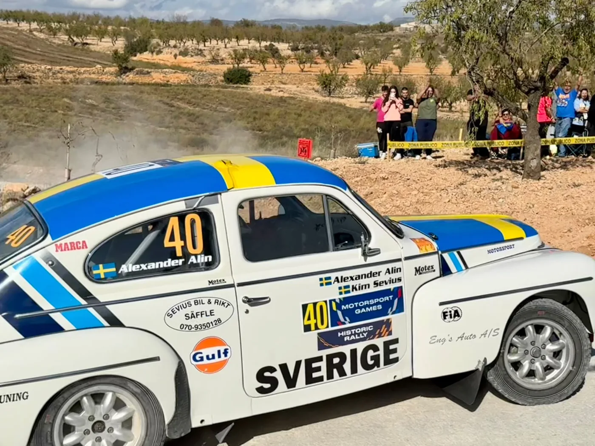

Ciemny cinematic
wariant-01-ciemny.htmlCzarny, graficzny, w kontrastowej czerwieni i błękicie. Parallax w hero, animowana mapa odcinków, kurz w powietrzu. Wariant oficjalny i premium.
Otwórz wariant 01 →Ta sama strona imprezy, trzy zupełnie różne kierunki wizualne. Wszystkie trzy warianty zawierają identyczną treść merytoryczną — ponad 100 km odcinków specjalnych, 10 OS, 14 klas i rundę Volvo Euro Cup. Wybierz ten, który najlepiej pasuje do charakteru wydarzenia.
Wariant pierwszy jest ciemny i profesjonalny — pasuje do oficjalnej komunikacji. Drugi jest ołówek na papierze — ludzki i przystojny. Trzeci to plakat — głośny, brutalistyczny, uliczny.

Czarny, graficzny, w kontrastowej czerwieni i błękicie. Parallax w hero, animowana mapa odcinków, kurz w powietrzu. Wariant oficjalny i premium.
Otwórz wariant 01 →
Papier, akwarela, ołówek i kredka. Polaroidy w galerii, ciepłe kolory, ręcznie pisane nagłówki. Wariant przystojny, rodzinny, ludzki.
Otwórz wariant 02 →
Druk offsetowy: gruba czerń, czerwień, żółć, ostre krawędzie i zero zaokrągleń. Wariant uliczny — krzyczy z pierwszego ekranu.
Otwórz wariant 03 →